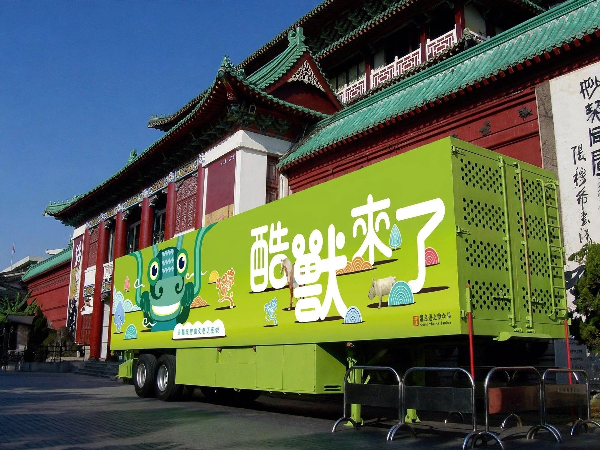
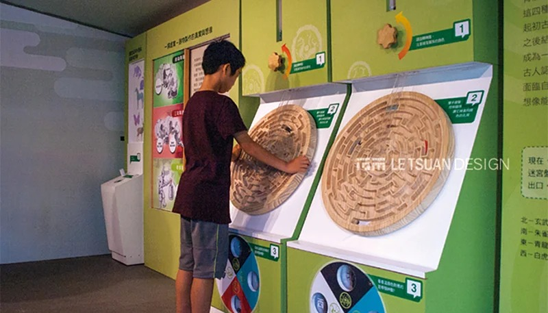
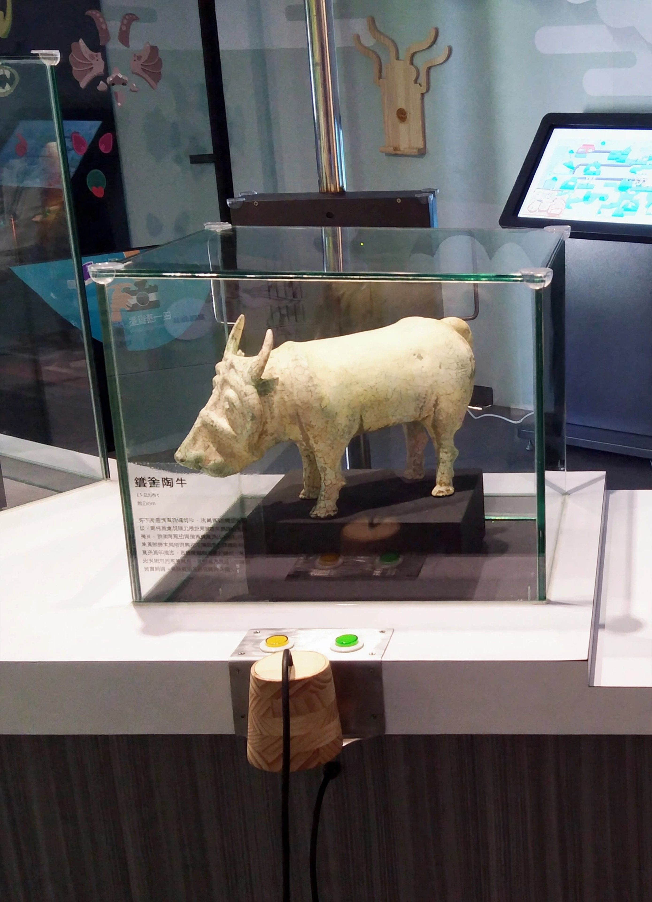
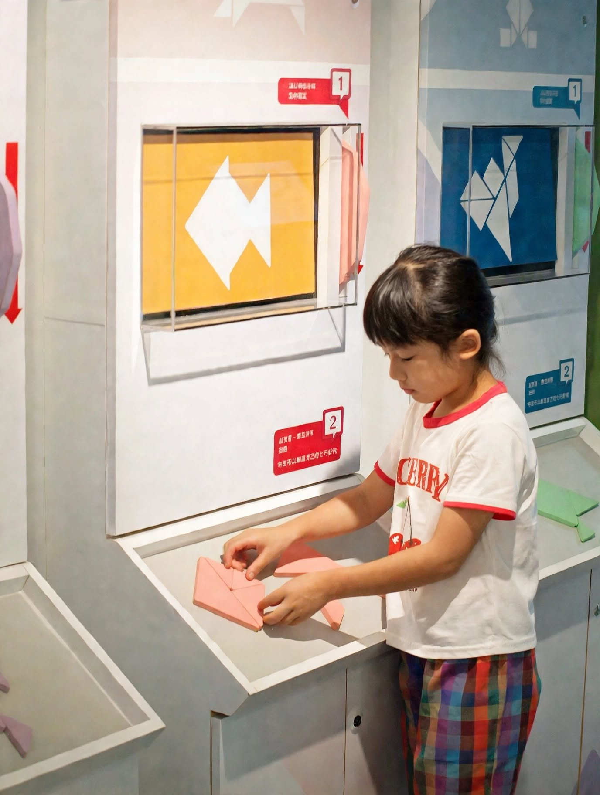
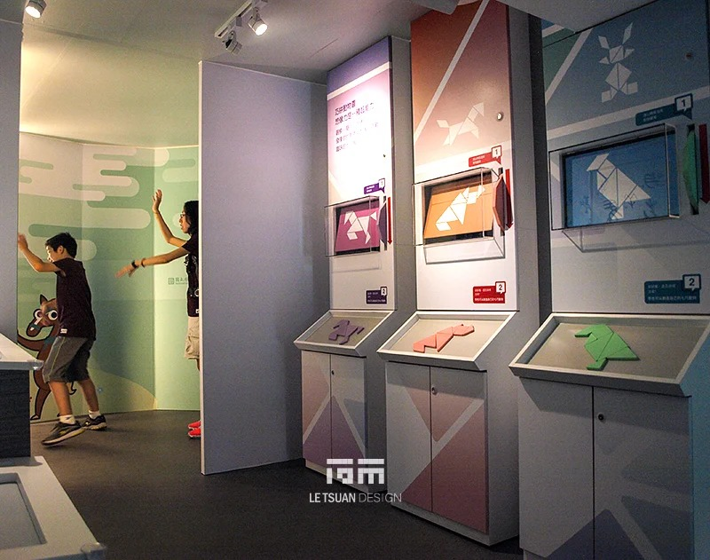
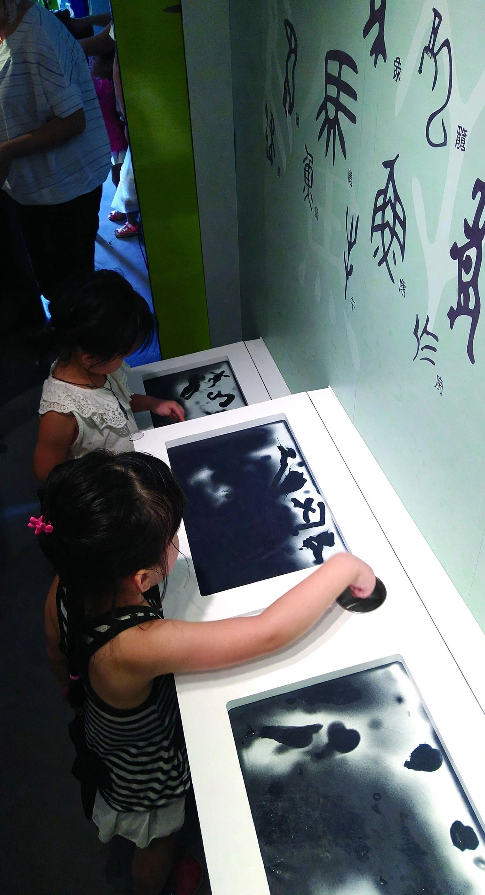
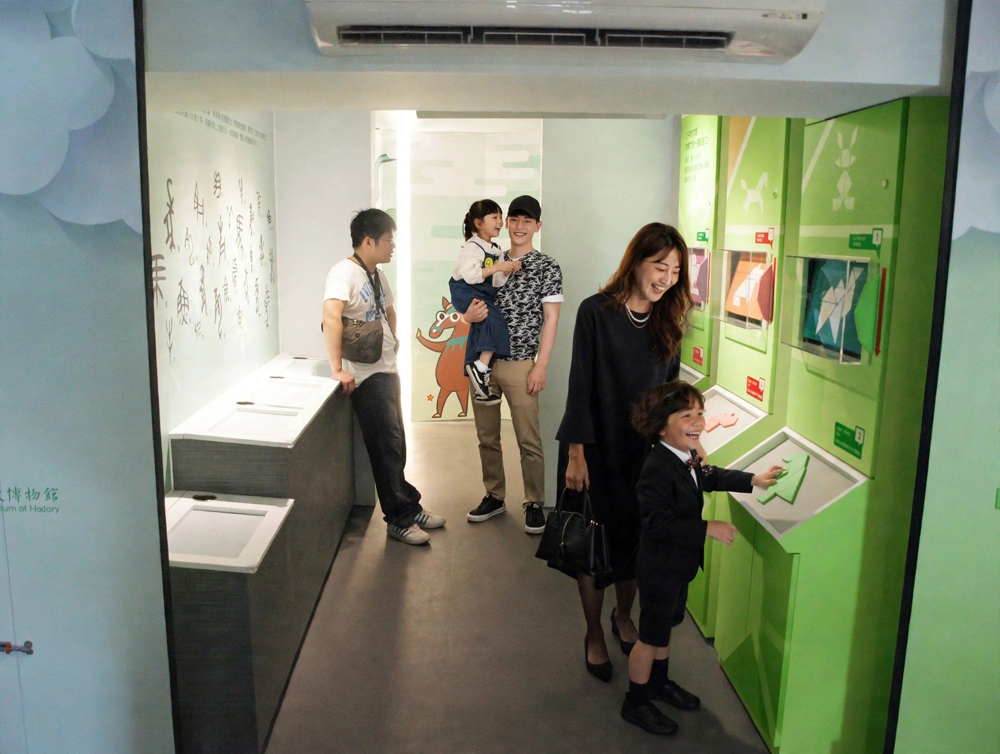

8.5坪的博物館 酷獸來了行動博物館
8.5坪，塞進一座博物館
酷獸來了行動博物館｜一輛40呎貨櫃，八大展區，還要能收合上路
國立歷史博物館自2001年起，打造了全台第一輛常設行動博物館車，以40呎貨櫃改裝為移動展示載體，把館藏文物送進全台學校與社區。2017年，史博館把既有貨櫃車重新改裝，推出「酷獸來了：真實與想像的奇幻體驗」，以館藏國寶及重要古物「獸形器座」、「綠釉陶牛」、「三彩馬」為核心，結合四方神獸與生肖動物意象，把數位互動跟傳統文化教育，塞進同一個會開車的空間裡。
這輛車，得先修好才能裝修
既有貨櫃車體先拖到嘉義板車場，進行結構修補、機電系統更新與空調更換–車體基礎整備完成後，才轉運到后里木工廠進行內裝製作。展示道具與造型構件以CNC雕刻加工成型，現場再執行鐵件加工，完成整體展示裝置的組裝與安裝。這不是室內裝修的邏輯，是先把一輛車修到堪用，才有資格談展示設計。
12.03m長，要塞進八個世界
貨櫃內部尺寸長12.03m、寬2.35m，室內面積約28.27㎡，換算下來大概8.5坪。動線最深處以弧形隔間牆界定出獨立的AR互動遊戲區，牆面延伸神獸插畫圖騰，並以色塊分區導引觀眾依序體驗各單元–在這個大小的空間裡，要容納八大展示單元跟完整動線，每一項尺寸與配置都得精密計算，容不下一吋浪費。更麻煩的是，貨櫃本身還得維持開闔與運輸的功能，展示設計沒辦法比照固定展館來做：展櫃、多媒體設備、燈光與機電系統的配置，都得配合貨櫃門片的開闔範圍，以及收納狀態下的空間限制–展開時要有完整的展示效果，收合上路時，任何一個設備都不能撞在一起、也不能擋住門片閉合。
八個單元，一個比一個會擠腦筋
八大展示單元，各自解決了同一個問題：怎麼在28.27㎡裡，讓每一種互動都不搶對方的空間。最見巧思的是「酷獸再現・神奇的3D列印術」–因為貨櫃空間狹小，語音導覽被設計成「紙杯傳音」的意象，觀眾得貼近裝置才能聽見，既避免聲音外溢干擾其他人，也順勢呼應了早期通訊器物的懷舊趣味，把空間限制反過來變成互動巧思。其餘七區各有各的解法：用不同材質串連真實與想像動物的「動物的牠和祂」、圖片問答與拼圖並行的Kiosk學習區、七巧板益智的「巧拼動物園」、體驗文字演變的「字由字在」、AR觸發動畫的「魔鏡魔鏡潮酷獸」、三款體感遊戲的「我是主角」，以及集章拓印帶走的「拓印帶回家」。
這輛車開到哪裡，8.5坪的博物館就開到哪裡–只是沒有人會想到，撐起這八個世界的，其實只是一輛修好的貨櫃車。
有專案想討論？
聯絡我們





